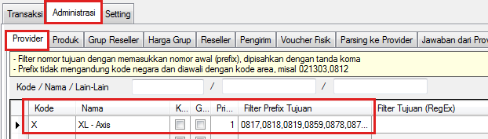
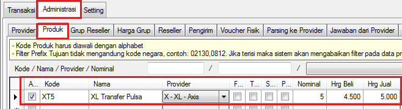
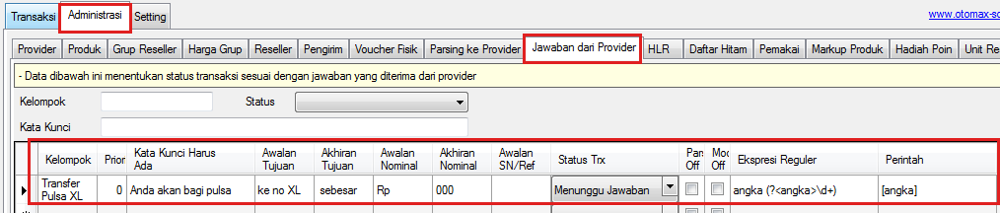
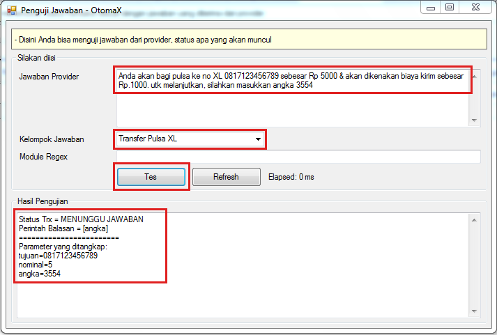
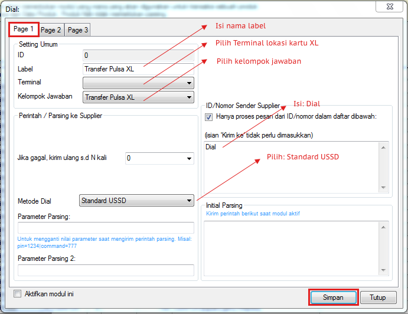
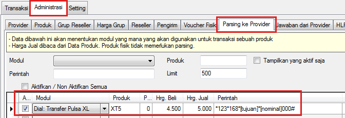

Transfer Pulsa
Tata cara melakukan transaksi transfer pulsa di OtomaX secara umum sama dengan transaksi yang lain, yaitu membuat kode produk, parsing, modul dan penangkap jawaban. Berikut ini contoh transfer pulsa XL Axiata:
XL Axiata
-
Pastikan telah membuat Kode Provider di menu Administrasi -> Provider

-
Pilih menu Administrasi -> Produk -> buat kode produk untuk transfer pulsa.

-
Pilih menu Administrasi -> Jawaban dari Provider -> buat penangkap jawaban untuk balasan berisi
angka unik seperti dibawah ini:
Anda akan bagi pulsa ke no XL 0817123456789 sebesar Rp 5000 & akan dikenakan biaya kirim sebesar Rp.1000. utk melanjutkan, silahkan masukkan angka 3554

- Nomor tujuan dan nominal ditangkap dengan menu Awalan/Akhiran Tujuan/Nominal.
- Angka unik (3554) ditangkap menu Ekspresi Reguler dengan RegEx: angka (?<angka>\d+) dan disimpan dalam parameter <angka>.
- Angka unik yang tersimpan diambil pakai parameter [angka] dan dikirim balik menggunakan menu Perintah.
Kemudian pilih menu Alat Penguji -> Penguji Jawaban -> lakukan pengujian penangkap jawaban diatas.

Pastikan Status Trx = MENUNGGU JAWABAN, Perintah Balasan = [angka] serta nomor tujuan, nominal dan angka unik tertangkap sesuai gambar diatas.
-
Pilih modul Dial -> klik kanan -> pilih Tambah Dial...

-
Pilih menu Administrasi -> Parsing ke Provider -> buat parsing.

- Pilih menu Administrasi -> Jawaban dari Provider -> buat penangkap jawaban untuk menangkap balasan sukses transfer pulsa XL Axiata, klik disini.
- Selesai.
Catatan: Format transaksi dan balasan transfer pulsa XL Axiata dapat berubah sewaktu - waktu sesuai kebijakan XL sehingga parsing transaksi dan penangkap jawaban diatas harus disesuaikan dengan yang terkini, adapun tata cara setting di OtomaX tetap sama. Untuk mengetahui format transaksi dan balasan terkini, silahkan hubungi XL Axiata.